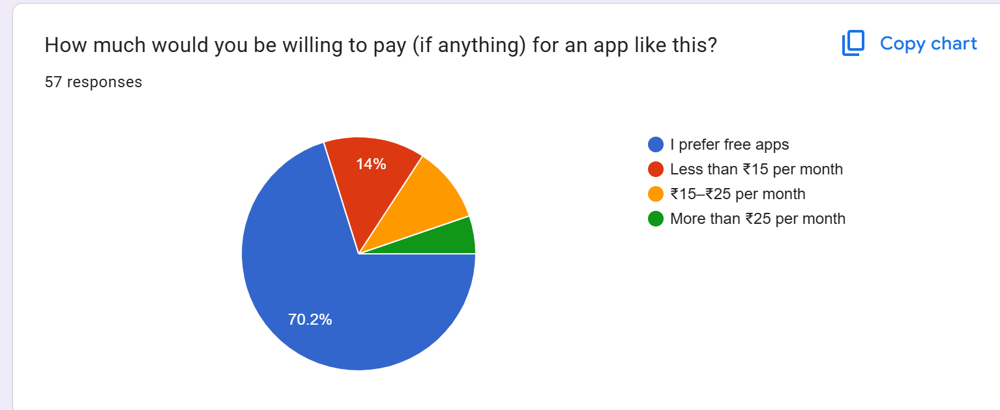
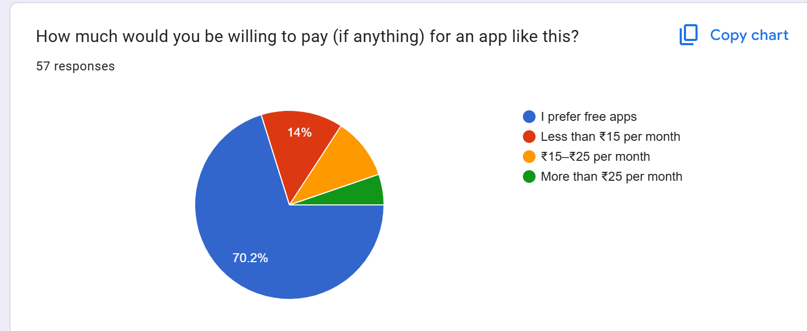

Savour
Smart Cooking, Less Waste
Savouris a behavioural UX project and meal-planning application designed to reduce household food waste through mindful consumption and efficient grocery organisation. It helps users track their food inventory, monitor expiry dates, and plan meals that make optimal use of available ingredients. With an interactive planner and smart grocery list, Savour prevents overbuying and ensures that every ingredient is used purposefully, turning everyday cooking into a more sustainable practice.
Beyond its practical features, Savour integrates recipe discovery, meal planning, and donation mapping to encourage conscious, community-oriented choices. It also includes an optional AI recipe generator that suggests meals based on ingredients at hand. Through this project, I explored how thoughtful design can inspire behavioural change, simplify daily routines, and promote environmental responsibility in a technologically driven world.
Problem Statement
Food waste occurs when groceries are purchased but perishables are forgotten or left unused until they expire, or when users struggle to find practical ways to use leftover ingredients. Many individuals also find it difficult to donate surplus food efficiently. Existing tools for managing food waste often feel complex and time-consuming, leading users to revert to manual methods and unintentional waste.
Main Tools
- FlutterFlow: High-fidelity interactive prototype and app development.
- Firebase: Backend database and inventory management.
- User Research: 50+ participants across students, working professionals and households.
Research
To understand everyday food waste habits, cooking behaviours, and openness to technology-based solutions, I conducted primary research through live interviews and surveys, supported by secondary research on food waste patterns in India, and a competitive analysis of existing apps addressing similar issues.
Primary Research
This phase combined live interviews and an online survey to identify user behaviours, pain points, and motivations related to food waste, meal planning, and food donation habits.
Live Interviews
Ten participants aged 20– shared insights on their cooking habits, food waste behaviour, and donation awareness. Common issues included difficulty tracking expiry dates, cooking in excess quantities, and limited knowledge of local donation options. Most participants expressed willingness to share surplus food if the process were easier and more accessible.
Online Survey
The online survey analysed cooking frequency, grocery spending, food waste volume, and openness to AI-based assistance. Most respondents cooked daily, spent ₹3,000–₹9,000 per month on groceries, and reported wasting less than 10% of food. However, nearly half found it difficult to use groceries before expiry—indicating a need for smart tracking and consumption reminders.
 

Behavioural Journey
The user journey from grocery purchase to food disposal revealed key behavioural gaps. Most users buy ingredients impulsively and cook based on mood, often leading to excess food. Leftovers are stored without expiry reminders, causing spoilage and untracked waste. Donation practices remain informal and inconsistent, usually shared by word of mouth. These patterns highlight opportunities for smart inventory tracking, recipe suggestions, and easy donation integration to promote mindful consumption and reduce waste.
Secondary Research
Desk research examined the larger context of food waste in India. Studies show that households contribute over 70% of the nation’s wasted food—amounting to 68.8 million kilograms annually—while 194 million people face undernutrition. The data emphasises the need for accessible, user-driven interventions that bridge awareness and action.
Contextual Mapping
The following system map illustrates the relationship between household behaviour, food surplus, environmental impact, and donation channels, identifying opportunities for intervention at the user level through smart, automated tools like Savour.
Competitor Analysis
A comparative review of existing food management, donation, and recipe applications helped position Savour within the ecosystem. The analysis highlighted usability gaps in sustainability communication, donation visibility, and personalisation—areas addressed in this project.
Together, the primary, secondary, and competitive findings shaped the foundation for Savour — a platform that bridges awareness, tracking, and community sharing by combining smart grocery management, adaptive recipes, and local donation integration.
Low-Fidelity Prototypes
Early paper prototypes were created to visualise user flow, layout, and interactions. These sketches helped in quickly testing concepts and gathering insights for the high-fidelity design:
- Initial sketches of app screens
- User flow diagrams
- Interaction layout experiments
The Design
The final design of Savour translates the research insights into an intuitive, flow-based mobile experience. Each section below represents a part of the user journey — from onboarding and home navigation to intelligent meal planning, donation tracking, and personalisation.
Splash & Authentication
- Splash Screens
- Sign Up and Log In
- Onboarding
Home & Navigation
- Home Page
- Side Drawer
- Notification Panel
Meal Suggestions
- AI Generated Recipes
- Shakshuka + Added to Favourites Option
- Taktouka
- Tomato Egg Curry
- Spicy Tomato Pasta
Pantry Management
- Pantry: Receipt
- Pantry: Ingredients and Dropdown Feature
- Pantry: Favourites
Sidebar
- Donation Hub
- Receipt
- Meal Planner
- About Page
Profile
- Edit Preferances
- History
- Help & Support
- Log Out
Challenges & Insights from Feeedback
- Limited validation due to conceptual prototype stage.
- Bill-based expiry detection and AI recipe mapping needed refinement.
- Balancing usability, sustainability, and motivation was complex.
- Reinforced the importance of ethical nudging and behavioural design for sustainability.
Future Scope
The next phase of Savour aims to move from prototype to pilot deployment through real user testing and data-driven refinement. The integration of IoT-based sensors for smart kitchen tracking could enable automatic inventory updates and spoilage detection. Planned updates also include enhanced AI for more personalised recipe suggestions, multilingual accessibility to reach regional audiences, and carbon footprint tracking to quantify the environmental impact of reduced waste. Community-level features such as collective meal planning, food-sharing networks, and gamified sustainability challenges could further encourage mindful consumption on a broader scale.